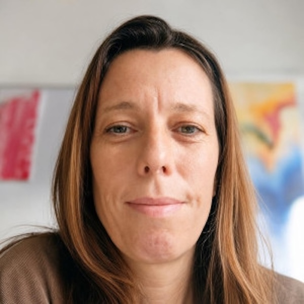

Felsőfokú angol vizsga (C1) felkészítés egyénileg, online
Személyre szabott órák a Cambridge C1 Advanced vizsgára. Az órákon a vizsga feladattípusaival, a gyakori hibákkal és az időbeosztással dolgozunk, a te szintedhez és határidődhöz igazítva.
Hogyan zajlik a felkészülés?
Három lépés, akkor is, ha már csak néhány heted van a vizsgáig.
-
Ingyenes megbeszélés
30 perc alatt megnézzük, hol tartasz, mi a vizsgaidőpontod, és mely részekkel van a legtöbb bajod. Azt is kiderítjük, hogy tudunk-e együtt dolgozni.
-
Személyes terv
A hiányosságokra építünk tervet. Nem tanuljuk újra azt, amit már tudsz.
-
Heti órák és házi feladat
Hetente egy vagy több alkalommal gyakoroljuk a feladattípusokat, a csapdákat, az időkezelést és a beszédrészt. Házi feladatot is kapsz, a munkádra pedig folyamatos visszajelzést.
A vizsga mind az öt részére
Reading
Szövegértési feladattípusok, csapdák és időbeosztás.
Use of English
Szókincs, nyelvtani szerkezetek és szövegkiegészítő feladatok.
Writing
Az egyes szövegtípusok elvárásai és a pontozás logikája.
Listening
Figyelemvezetés és a leggyakoribb csapdák.
Speaking
Beszédgyakorlat, időbeosztás, tippek és trükkök, hogy magabiztosan szólalj meg.
Amit a tanulóim írtak a közös munkánkról
Eszter az utolsó pillanatban került be az angol Cambridge CAE nyelvvizsga-felkészülésünkbe, amikor már pánikban volt az egész család. Az előző, más fórumról szerzett tanárok elérhetetlenek voltak és látszott, hogy bár a nyelvtudás megvan, a specifikus infók és rutin nagyon hiányoznak. Kiváló pedagógiai érzékkel és hatalmas rutinnal, teljes higgadtsággal vezetett végig az elképesztő rövid idő alatt a nyelvvizsga kulcsfontosságú elemein. Külön gyakoroltatta a gyengébb részeket, miután gyorsan felmérte, hogy mik a hiányosságok. Mindehhez még egy nagyon pozitív és nyugodt hozzáállást is biztosított, elmúlt a pánik. Rugalmas volt az óraszervezésben, időpontadásban és hatékonyan, gyorsan kommunikált. Sajnáljuk, hogy korábban nem találtunk rá. A folyamatos nyelvtanuláshoz vagy nyelvvizsgafelkészüléshez is nagyon ajánljuk az óráit! Még egyszer nagyon köszönjük!
Truly, Eszter is one of the best teachers I have ever met. She had a well-structured plan to help me achieve my goals, while keeping it all flexible. She never made me feel like I wasn’t capable, and she was always patient with me. Learning with Eszter was actually fun, she encouraged me a lot throughout my journey. Thanks to her I passed the CAE with flying colors! I think I couldn't have chosen anyone better. :)
Eszter csodálatos és rettentően segítőkész tanár. Egy elég extrém kívánsággal fordultam hozzá, ami az volt hogy 3 nap alatt kellett intenzíven felkészülni és átnézni az iTolc vizsga követelményeit. Viszont a felkészülés sikeresen zárult, meglett a C1 vizsgám és őszintén is nem lehetnék boldogabb. Aki egy lelkiismeretes, ítélkezés mentes, kedves, hatékony tanárra vágyik annak mindenképpen Esztert ajánlom!!
Speaking English felt impossible, until Eszter. Choosing the right teacher changes everything. With Eszter, English has become practical, usable knowledge for me. I had always studied English and worked with several teachers, yet I never reached the point where I could actually speak. With Eszter, that completely changed. I started using the language in real life. I’m not perfect yet, but I listen to podcasts in English, read books in English, have foreign friends, and it’s no longer stressful if I get lost abroad or have to take a phone call in English at work. Thank you very much!
She is an excellent, well prepared teacher. Before I started studying with her, I hardly dared to speak in English. In a very short time, she managed to break through this barrier in me. Thanks to her, I was able to complete a job interview in English.

Arnold Eszter
- 10+
- év tapasztalat
- TESOL tanúsítvány
- Arizona State University
Magyar vagyok, 12 éve költöztem Spanyolországba, a férjem pedig amerikai, így nálunk otthon magyar, angol és spanyol keveredik: igazi nyelvi kavalkád. Naponta tapasztalom, milyen a nyelvek között ugrálni, ezért jól értem, mivel küzdenek a tanulóim.
2016-ban kezdtem tanítani angolul. Dolgozom tinédzserekkel, felnőttekkel és szakemberekkel is: vizsgafelkészítésen, állásinterjú-felkészítésen, üzleti és mindennapi angolon.
A Cambridge-vizsgák a specialitásom, ezen belül a legkeresettebb a C1, amire már több száz tanulót készítettem fel. TOEFL, Pearson és Linguaskill vizsgára is felkészítek.
Az óráimon nyugodt, támogató légkört teremtek, és minden órát a te céljaidhoz igazítok, hogy magabiztosabb legyél, és lásd az eredményt.
Gyakori kérdések
Milyen szintről érdemes belevágni?
Ha a nyelvtudásod nagyjából megvan a vizsgához, de hiányzik a vizsga-rutin és a feladattípusok ismerete, jó helyen jársz. Az ingyenes megbeszélésen megnézzük, hol tartasz.
Mi történik az ingyenes megbeszélésen?
30 percben beszélgetünk a céljaidról és a vizsgaidőpontodról, felmérjük a szintedet, és megnézzük azt is, hogy tudunk-e együtt dolgozni.
Csak C1-re készítesz fel?
A C1 a fő területem, de más angol nyelvvizsgákra és állásinterjú-felkészítésre is lehet hozzám jelentkezni. Írj, és megbeszéljük.
Ár és ingyenes megbeszélés
- Online, egyéni, a te tempódban
- Rugalmas időpontok
- Vizsgafeladatok és visszajelzés minden órán
Az első alkalom egy ingyenes, 30 perces megbeszélés: felmérjük a szintedet, megbeszéljük a céljaidat és a vizsgaidőpontodat, és megnézzük, hogy tudunk-e együtt dolgozni.